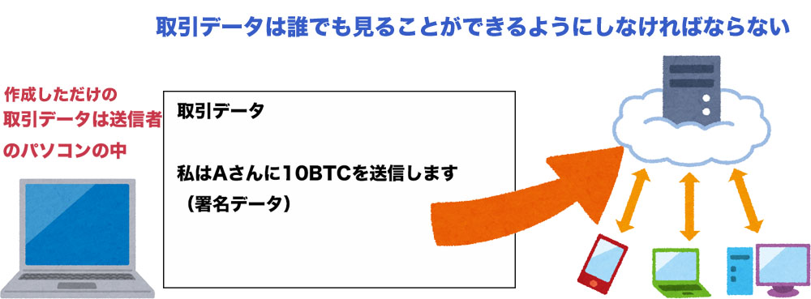
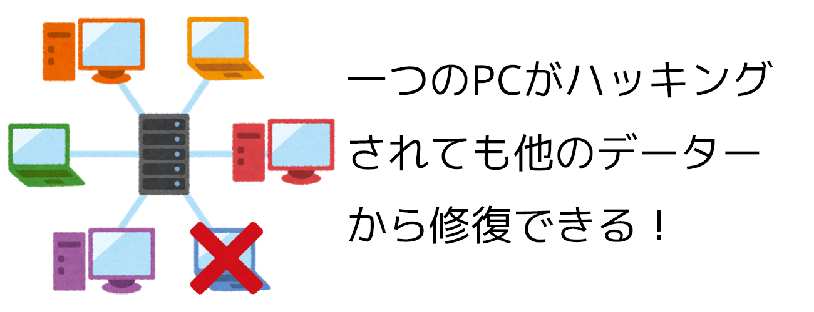
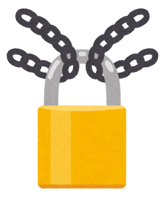

ブロックチェーンとマイニング
ここからは、仮想通貨に欠かすこと出来ない技術であるブロックチェーンについての説明を行っていきます。
トランザクションの保存場所
前ページでは、トランザクションに記入する情報と、本人を証明するための秘密鍵を用いた署名について説明をしましたが、このトランザクションを作っているのは誰なのでしょうか。
それは通貨の送信側です。通貨を受け取る側は相手にアドレスを教えるだけで良いので、取引データは署名という操作を行う送信側のコンピュータがあれば作ることが出来ます。
しかし、取引情報を自分のコンピュータだけに入れておいても意味がありません。
誰が誰にいくら支払ったのかを誰もが見ることができるように、そのデータを世界中に公開しなければいけないのです。
そのため、作られた取引のデータは取引を保存しているネットワーク上に送信されます。

ここで問題になるのは、そのデータを保存は誰が行うのか、ということです。
例えばSNSの投稿を世界中に発信するためには、一度SNSを運営している会社のサーバーに保存して、利用者がサーバーから情報を受け取っています。
しかし、仮想通貨には特別な権限を持った機関や企業が存在しないため、その方法は使えません。その代わりに、利用者が共同で取引のデータを保存しています。
このようにして保存する利点は、データを幾つかに分割してそれぞれのコンピュータに保存できるため、大規模な設備を用意する必要が無いということと、
仮に保存しているコンピューターの一部がハッキングなどを受けてデータを改竄されても、同じデータを持っている人が何人もいるため、データの訂正をすぐに行う事ができることです。
この特性はデータを保存するコンピュータの数が多いほど顕著になり、ビットコインの様に世界中何万人という規模でデータを管理していれば、一度記録されたデータを改竄することは殆ど不可能になるのです。

ブロックチェーンとは？
世界中で取引のデータを管理する為に必要になるのが、ブロックチェーンという技術です。
仮想通貨による取引は世界中で大量におこなれていて、ビットコインだけでも一日で25万近い取引が行われています。
これらのトランザクションを逐一記録するのではなく、いくつかのトランザクションをチェックしながらひとまとめにして記録します。
この時、一つにまとめられた物を「ブロック」と言います。ブロックは、ブロックヘッダと呼ばれるブロックについての情報を記した部分と、トランザクションを格納している二つの部分から構成されます。
ビットコインの場合、一つのブロックに約10分間に行われた取引(2000前後)のデータが入っています。
このブロックが鎖の様に次々と繋がって行くため、このような保存方法はブロックチェーンと呼ばれます。

Proof of work(仕事の証明)
ところで、取引が正しいかどうかの検証を行うのは誰でしょうか。
取引の記録と同じように、特定の人や集団が取引を承認する権利を持っているわけではありません。
そのため、取引の正しさの保証をするのも利用者達です。
取引の正当性の確認そのものは、過去のデータと照合して簡単に行うことができるので、特別な制限を設けなければ誰でも簡単に取引が正しいかの確認が出来ます。
しかし、ここで一つ問題があります。
もし、誰でも取引を正当なものとして承認することが出来てしまうと、不正な取引を承認させようとする人の手によって不正な取引が記録されてしまうのです。
そのため「誰にでも取引を承認できる状況を作りつつも、都合よく悪意を持った者による取引の承認は出来ない」ような仕組みを作らなければなりません。
この仕組みを実現するために考えられたのは、「取引の承認を行おうとしている人達にくじを引かせる」という方法です。
くじといっても、一斉に引いて誰かが必ず当たりを引くようなものではありません。
それぞれが極めて当たる確率の低いくじを何度も引いて、誰が最初に当たりを引くかを競うのです。
くじを引くのはコンピュータなので、当たりを引くまでの時間はコンピュータの計算速度に依存します。
世界中の仮想通貨の利用者がコンピュータを稼働させてこの競争に参加しているため、不正な取引データを記録させるためには「世界中の仮想通貨利用者のコンピュータよりも早く計算を行う」必要があります。
少数の悪意をもった利用者で（スーパーコンピュータを含めて）世界に何十万といる仮想通貨の利用者よりも早い計算を行うのは実質的に不可能であるため、不正データを記録する事ができないという仕組みなのです。
このように、「善良な利用者は不正な利用者よりも数が圧倒的に多い」事を利用して不正を防ぐ方法は「Proof of work」と呼ばれます。
Proof of work の詳しい解説と安全性の検証については「実験」のページを参照してください。
通貨の発行とマイニング
利用者の数が多い事を利用して安全性を維持しているProof of work ですが、これは利用者が安全性の確保のために計算をしている事を前提としています。
しかし、コンピュータに計算をさせるには、当然ながら電気を消費します。
仮想通貨の維持の為に、何の見返りもなく電気を消費しなければならないとしたら、誰もこんな事をしようとは思わないでしょう。
そのため、ブロックチェーンを繋げた人には報酬が支払われるようになっているのです。
報酬の一つは、承認手数料です。仮想通貨を支払うときに利用者が僅かに支払う手数料を合計したものが承認を行った人に支払われます。
そして報酬のもう一つは、仮想通貨のシステムそのものから支払われる報酬です。
つまり、仮想通貨は取引の承認によってブロックが繋がった際に自動的に発行され、採掘を行った者に報酬として与えられるのです。
現在流通している仮想通貨は、元をたどれば全てブロックをつなげた際に発行されているのです。
このように、ブロックをつなげると報酬が支払われるため、その獲得を目指して人々は仮想通貨の承認作業に参加してくれるのです。
また、「あたり」を引くまで計算をし続けて報酬の獲得を目指す様子が鉱山で金を掘り当てようとする様子に似ているため、この承認作業のことを「採掘（マイニング）」と呼ぶことがあります。